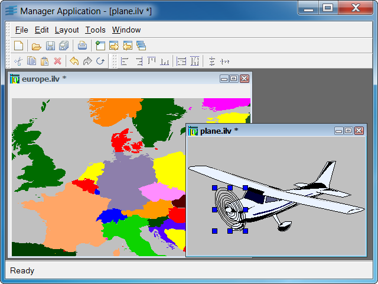

managerExample of a basic Views manager editor.
This simple application shows you how to open and edit Rogue Wave Views managers using the Application Framework library. It allows you to move and reshape the graphic objects of a Views manager displayed in a manager view. It provides commands that perform different kinds of alignments on selected objects, or that give the size of the active selected object to a group of selected objects.
The way the events that occur on the view are managed and sent to the document is typical of Application Framework mechanisms.
IlvSelectInteractor).IlvDvManagerDocumentIlvDvManagerViewIlvSelectInteractorIlvDvCommand